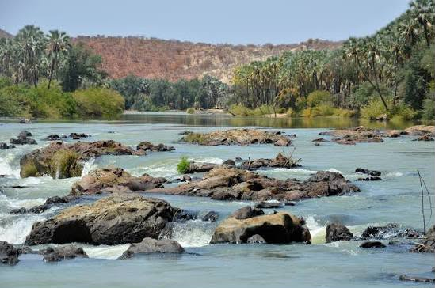

Ondjiva
77.156 km²
Oshiwambo (Cuanhama) e Português
O Cunene é uma província do sul de Angola, caracterizada pelo clima semiárido, forte tradição cultural do povo Ovambo e grande importância pastoral.